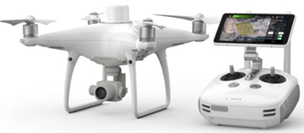

A brief introduction about the project is that the project was undertaken in collaboration with my employer - SmartX. In this project, an online GIS-based application for a landowner located in South Australia was to be developed and tailored to meet specific needs of agricultural land management. The development of this web-based mapping agricultural land management application with GIS software and Trimble Business Centre aims to foster increased effectiveness, efficiency, and productivity in farming practices.


Several factors must be considered when creating a mapping app for agricultural land management. The most critical is liaising with the landowner and the workers out on the farm on what the final objectives are by creating this web application. Some other factors to consider include data accuracy, integration of various data types, ease of use, and the possibility of functionality in low-connectivity areas. This approach is a structured way to design, develop, and test this web-based agriculture GIS application. The core stages of the methodology to develop a web-based land management application include requirement analysis, design and planning, data acquisition, and application development, followed by the evaluation of the app.

The image above illustrates the farmland aerial imagery captured by an RTK drone in GeoTIFF format.
The image above illustrates the RTK drone used to capture the farmland aerial imagery.
| AutoCAD | Trimble Business Centre (TBC) | ||
| ArcGIS Suite | QGIS |
| Functional Requirements | Achieved? (Y/N) | Evaluation Notes | Description |
|---|---|---|---|
| Real-time data updates | Y | Enabled real-time asset monitoring when connectivity was stable, but degraded in low-connectivity areas. | Allows users to monitor live changes in assets, infrastructure, etc. |
| GPS and drone imagery integration | Y | Successfully integrated for high spatial accuracy. | Provides spatial accuracy and high-resolution imagery for field navigation. |
| High-resolution basemap | Y | GeoTIFF basemap loaded efficiently, though slow in low-connectivity environments. | Offers detailed visual references for farm infrastructure and layout. |
| Cross-device compatibility | Y | Functional across desktops and tablets, with no significant performance differences noted. | Ensures usability across desktops and tablets. |
| Offline data synchronisation | N | Offline functionality was not implemented, affecting usability in areas with poor internet access. | Allows the app to function with limited internet connectivity. |
This table summarises the core functional requirements achieved in the Capstone Project, focusing on real-time data updates, GPS integration, high-resolution basemap accessibility, and cross-device compatibility. While most requirements were met, offline data synchronisation remains a future objective to enhance functionality in low-connectivity environments.
During this project, the focus was on achieving real-time data accuracy and maintaining high-resolution basemaps for farm layout references. We integrated GPS and drone data to ensure spatial accuracy and provide detailed visual references. Cross-device compatibility was also achieved, allowing users to access the app on both desktops and tablets seamlessly.
For future development, implementing offline data synchronisation will be a priority to improve accessibility and usability in remote agricultural settings where internet connectivity is limited. By addressing this, we aim to create a more robust tool that supports farmers and land managers in various environments.
The project’s objective was to develop and evaluate a web-based GIS application in agricultural land management. The core of the web-based application was to integrate spatial data, to provide an efficient tool for both the landowner and farmers for precision agriculture, resource management, and decision-making. To successfully develop and evaluate any application, criteria are developed to evaluate the performance and design of the application which includes: data integration, spatial accuracy, usability criteria, and application functionality. The results regarding this are presented in the following sections based on the identified criteria.
| Criteria | Result |
|---|---|
| Aerial Imagery Integration | High-resolution GeoTIFF imagery was processed and integrated successfully to provide spatial accuracy. |
| GPS Data Integration | GPS data provided accurate positional information for assets like troughs. |
| CAD Data Integration | CAD files digitised key infrastructure, enhancing spatial detail. |

 |
|
 |
|---|---|---|
|
Email E-Gene Chew (work) here:
e-gene@smartx.au |
Email E-Gene Chew here:
egenec2002@gmail.com |
LinkedIn:
E-Gene Chew |